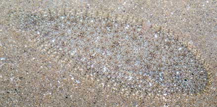
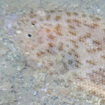

|
|
| fishes text index | photo index |
| Phylum Chordata > Subphylum Vertebrata > fishes > Order Pleuronectiformes > Family Soleidae |
| Ovate
sole Solea ovata Family Soleidae updated Oct 2020 Where seen? This small flat fish is commonly seen on Changi, in sandy areas near seagrasses. Features: To about 9cm long, those seen 4-5cm. Eyes on right side. Small, highly curved mouth. Body oval and very flat. Tail fin joined to the dorsal and anal fins only at the base. Dark pectoral fin. Sand-coloured with speckles and spots. |
 Changi, May 05 |
 Changi, Aug 05 |
 Eyes on the right side. |
 Tail fin separate from the dorsal and anal fins. |
| What does it eat? It hunts small
animals that live on the sea bottom especially crustaceans. Human uses: Large specimens are economically important and sold fresh, frozen and dried-salted. |
| Ovate soles on Singapore shores |
On wildsingapore
flickr
|
 |
Links
|